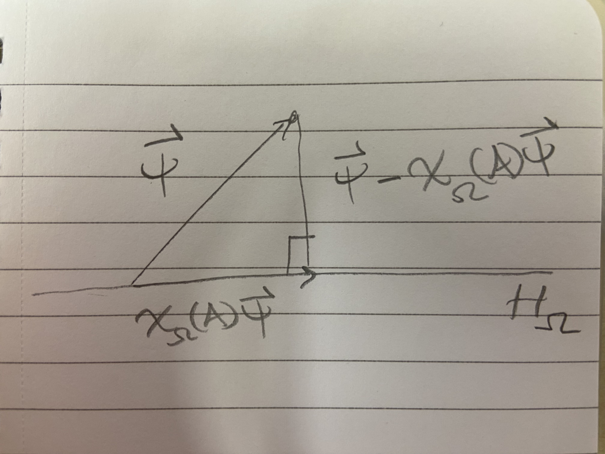

Yang-Mills Lattice Gauge Theory - William’s Explorations
January 31, 2026
Summary of the Lorentz and Poincaré groups
In this section I would like to breifly summarize Section 2.3 “The Lorentz and Poincaré Groups” from Brennecke (2026).
The Poincaré group and the Lorentz group \(O(1,3)\) are mathematical objects that have physical meaning in special relativity. For instance, Lorentz transformations describe special relativistic coordinate changes of Minkowski spacetime. But from a mathematical point of view, these two groups have certain structure and properties. For example, viewed as a set, \[ \mathcal{P} = \{(a,L) \mid a \in \mathbb R^4, L \in O(1,3)\}. \] Viewed as an abstract group, one writes \[(a,L)(a',L') = (a + La', LL')\] for the group law, with the identity element \((0, 1_{\mathbb R^4})\). In view of defining strongly continuous projective representations of the proper Poincare group \(\mathcal{P}_+^\uparrow\) on some vector space, and by inspecting the definition of strong continuity, we consider the subspace topology on \(O(1,3)\) inherited from \(\mathbb R^{4 \times 4}\). This topological structure admits a notion of connectivity, which is often mentioned. Connectivity is a desirable property because of the following result:
Let \(G\) be a connected, simply connected and compact Lie group. Then every finite dimensional stronly continuous projective unitary representation of \(G\) can be lifted to a strongly continuous unitary representation of \(G\).
Connectivity is shown in section 2.3 through a discussion of parametrizations. Additionally, based on the theorem, the Lorentz and Poincaré groups ought to have a smooth structure to turn them into Lie groups.
Okay I will not conclude this section because I’m too tired.
Lemma 2.4 Discussion
The strategy to construct an analytic atlas for \(O(1,3)\) is as follows. First one asks, if \(O(1,3)\) is truly a Lie group, then what would be its Lie algebra? (Recall that the notion of a Lie algebra associated to a Lie group is distinct from the notion of a standalone Lie algebra.) The candidate is the matrix group \(\mathfrak{so}(1,3)\). One then establishes that \(\mathfrak{so}(1,3)\) is a Lie algebra. One then finishes the proof by using the exponential and logarithm maps together with the Lie algebra \(\mathfrak{so}(1,3)\) to establish an analytic atlas for \(O(1,3)\). This explains one reason why the Lie algebra is of interest: it is used to establish charts for the (to-be) Lie group.
Scattered Thoughts
One equips \(O(1,3)\) with the subspace topology inhereted from \(\mathbb R^4\). Matrix multiplication \(\cdot: O(1,3)^2 \to O(1,3)\) is continuous with respect to this topology and so is matrix inverse: \(L \mapsto L^{-1}\).
Example 1.5 is important because it defines the generators \(X_1, X_2,\) and \(X_3\) of \(SO(3)\). The three matrices are also a basis for \(\mathfrak{so}(3)\), and the exponential map \(\exp: \mathfrak{so}(3) \to SO(3)\) is surjective.
What is the role of the analytic structure of \(O(1,3)\) and its Lie algebra?
I see where connectedness comes in now. It is a condition in the hypothesis of Proposition 1.2, which says that you can lift a projective representation to a unitary representation.
How do unitary representations arise in the setting of quantum mechanics? Rotating the domain of wave functions using the group \(SO(3)\) gives you a unitary representation.
Discuss irreducible representations. A reducible representation of \(G\) on a vector space \(V\) would be one for which there is a non-trivial subspace \(S \subset V\) for which \(\rho(g)S \subset S\) for all \(g \in G\). In plain english, the vector space \(V\) can not be broken up in a way that is compatible with all the maps implemented via the group \(G\). For example, by Lemma 3.2, the representation \[ \mathcal{P}_+^{\uparrow} \ni (a,L) \mapsto U(a,L) \in \mathcal{U}(L^2(S_m^+)) \] is irreducible. Just from the definition of irreducibility, this means that there is no non-trivial invariant subspace of \(L^2(S_m^+)\) under \(U(a,L)\) for all \((a,L)\).
Remarks about Analysis and Geometry on Manifolds
Stokes’s Theorem is the big theorem in the intro lecture course called Analysis and Geometry on Manifolds at Uni. Bonn. Recall the fundamental theorem of calculus: \[ \int_{[a,b]} f' = f|_a^b. \] Stokes’s theorem generalizes this: \[ \int_{M} d\omega = \int_{\partial M} \omega. \] Recall also Gauss’s theorem for a vector field \(F: U \to \mathbb R^n\), where the outward pointing normal is denoted by \(\nu\): \[ \int_{U} \text{Div} F = -\int_{\partial U} \langle F, \nu \rangle. \] Gauss’s theorem says that summing up the divergence of a physical field inside a sphere is the same as summing up the dot product of the field arrows with the arrows that are normal to the sphere on the outer surface of the sphere. For example, the electric flux of an electric field through a spherical shell can be viewed mathematically in the expressions \[ \int_{\partial S} \langle E, \nu \rangle \] or \[ \int_{\theta, \phi} E \cdot (d\theta \times d\phi) dA(\phi, \theta). \] Then supposing there is a point charge in the interior of the sphere, from which infinitesimal electric field divergences can be computed, one gets from Gauss’s theorem that the electric flux (the surface integral) is proportional to the total enclosed charge, \(Q_0\).
The question remains how to view Gauss’s theorem as a version of Stoke’s theorem. By analogy, one would want there to be a differential form \(\omega\) that can be identified with \(\text{Div} F dx\), and satisfying the property that the exterior derivative \(d\omega\) corresponds to \(F \cdot \nu dS\), (\(dS\) denoting surface measure), or equivalently for \(d\omega\) to correspond to \(F \cdot (d\theta \times d\phi) dA = F \cdot d\mathbf{A}\), where \(d\mathbf{A}\) denotes a directed surface area element.
I was not able to figure this out in time before tennis practice, but the following resources are relevant:
- https://sites.ualberta.ca/~vbouchar/MATH215/section_divergence.html. As an aside, I am inspired how the author, Vincent Bouchard, lists out all the results of the calculus course.
- Exercise 8 in Section 6 of Chapter I: Calculus on Euclidean space in the book O’Neill (1966)
- section called Exterior Derivatives and Vector Calculus in \(\mathbb R^3\) in Chapter 14 of Lee (2013)
- section called Divergence Theorem in Chapter 16 of Lee (2013)
January 30, 2026
Dyson Brownian Motion
In this subsection I want to learn about Dyson Brownian motion. Let me learn about it from a high-level/superficial point of view.
I’m going to follow the article here: https://terrytao.wordpress.com/2010/01/18/254a-notes-3b-brownian-motion-and-dyson-brownian-motion/.
Supposedly, Dyson Brownian motion is Brownian motion defined on the spectrum of \(n \times n\) Hermitian matrices. To make sense of this previous sentence, what is usual Brownian motion defined on? The answer is that BM is defined on \(\mathbb R\) in the sense that BM is a family of random variables \((X_t)_{t \in \mathcal{I}}\) where each random variable \(X_t\) for fixed \(t \in \mathcal{I}\) takes values in \(\mathbb R\). Next, Brownian motion can be defined on vector spaces of matrices. What does this mean? This means that Brownian motion can be seen as a family of random variables \((X_t)_{t \in \mathcal{I}}\) where each random variable \(X_t\) for fixed \(t\) is no longer a random real number, but a random matrix. That is, if \(\text{Mat}\) denotes a vector space of matrices, then \(X_t(\omega) \in \text{Mat}\) for any \(t \in \mathcal{I}\) and any \(\omega\) in the underlying probability state space. Now suppose that \(\text{Mat} = H(N)\), the space of \(N \times N\) complex Hermitian matrices. Hermitian matrices are diagonalizable, meaning that \(H \in H(N)\) implies the existence of a unitary matrix \(U\) and a diagonal matrix \(D\) such that \(H = U^* D U\), where the diagonal of \(D\) consists of the eigenvalues of \(H\), which are all real. These eigenvalues form the spectrum of \(H\), denoted \(\sigma(H) = \{\lambda_1 \le \cdots \le \lambda_N\}\), where the ordering is made possible by virtue of \(\lambda_i \in \mathbb R\) for all \(i\). To be precise, Dyson Brownian motion is defined on a quotient space of equivalence classes of Hermitian matrices, where the equivalence relation if given by unitary matrix conjugation. That is, we say \(H_1 \sim H_2\) if and only if there exists a unitary matrix \(U\) such that \(H_1 = UH_2U^*\). This is the same as the equivalence relation \(H_1 \sim H_2\) if and only if \(\sigma(H_1) = \sigma(H_2)\). Thus, we should expect that for a Dyson Brownian motion \((X_t)_{t \in \mathcal{I}}\), that \(X_t \in H(N) / \sim\), or identifying equivalences classes with possible spectra, then \(X_t \in \{x \in \mathbb R^N \mid x_1 \le \cdots \le x_N\}.\)
Now recall that for Brownian motion \((B_t)_{t \in \mathcal{I}}\) on \(\mathbb R\) starting at \(0\), each random variable \(B_t\) for fixed \(t\) has a Gaussian distribution, and that the finite dimensional distributions are Gaussian vectors. And a multi-dimensional Brownian motion can be viewed as multiple one-dimensional Brownian motions tupled together. It remains to be shown what kind of finite dimensional distributions a Dyson Brownian Motion ought to have. For instance, suppose a Brownian motion is defined on Hermitian matrices \(H(N)\). How are certain eigenvalues weighted according to Brownian motion on Hermitian matrices? For instance, does one spectrum have a higher probability density than another spectrum? This needs to be answered.
Learning about Representation theory of Poincare Group
In this section I want to learn about Section 3.2 of Brennecke (2026).
The Poincaré group is
January 29, 2026
In this post, I want to learn about section 2.4 in Brennecke (2026), called Operators on Fock space.
January 22, 2026
In this post I want to learn about the spectral theorem in the context of quantum mechanics.
The following quote is a passage from Brennecke (2026).
“Based on the spectral theorem, let us point out how, in the context of quantum mechanics, observables like the position or the momentum of a particle are connected with self-adjoint operators. Suppose that \(A: D_A \to \mathcal{H}\) represents some observable \(\mathcal{O}\) and that the system is in state \(\psi \in \mathcal{H}\). Then, based on the normalization \(\lvert \psi \rvert = 1\) and on the spectral decomposition (1.11) of \(A\), one identifies \(\mathcal{O}\) with a real-valued random variable (ranging almost surely in the spectrum \(\sigma(A) \subset \mathbb R\) of \(A\)) and the probability \(\mathbb P\) that \(\mathcal{O}\) takes a specific value in some measurable set \(\Omega \in \mathcal{B}(\mathbb R)\) is defined as \[ \mathbb P(\mathcal{O} \in \Omega) = \int_{\Omega} \langle \psi, \chi_{d\lambda}(A) \psi \rangle = \langle \psi, \chi_{\Omega}(A) \psi \rangle. \tag{1}\]
Notice that the law \(\Omega \mapsto \mathcal{O}_*(\mathbb P)(\Omega) = \mathbb P(\mathcal{O} \in \Omega)\) defines indeed a Borel probability measure on \(\mathbb R\)” (p 12).
Also, for easy reference, (1.11) says, “In terms of the projection-valued measure, \(A: D_A \to \mathcal{H}\) has the spectral decomposition \[ A = \int_{\sigma(A)} \lambda \chi_{d\lambda}(A), \] where \(\sigma(A) \subset \mathbb R\) denotes the spectrum of \(A\).”
Explanation of the probability part
First, the quantum system is in state \(\psi \in \mathcal{H}\). We want to know the chance that some observable \(\mathcal{O}\) takes values in the subset \(\Omega \subset \sigma(A)\), based on the fact that the system is in state \(\psi\). For instance, if \(A\) has actual discrete eigenvalues, say \((\lambda_i)_{i \in [n]}\), then we might want to know the chance that \(\mathcal{O} = \lambda_i\) for some \(i\).
Well, the spectral theorem says roughly that the Hilbert space \(\mathcal{H}\) can be decomposed based on the spectrum of \(A\): \[ \mathcal{H} = \oplus_{\lambda \in \sigma(A)}E_\lambda \] where \(E_\lambda\) is the subspace spanned by eigenvectors associated to \(\lambda\).
When looking only at a subset \(\Omega\), then \(H_{\Omega} := \oplus_{\lambda \in \Omega} E_\lambda\) forms some subspace of \(\mathcal{H}\). My thinking is then that this subspace \(H_\Omega\) is the set of quantum states that are associated to the observable \(\mathcal{O}\) ranging in \(\Omega\).
Next, note that \(\chi_\Omega(A)\) is the orthogonal projection onto the subspace \(H_\Omega\). Let’s assume the case that \(\psi\) is not already in the subspace \(H_\Omega\). Then we get the following picture. 
Given the picture, which shows an orthogonal decomposition of the vector \(\psi\), how do we interpret \(\langle \psi , \chi_{\Omega}(A) \psi \rangle\) as a probability? Note that, using \(\lVert \psi \rVert = 1\), it follows that
\(\langle \psi, \chi_\Omega(A) \psi \rangle = \cos \theta \lVert \chi_\Omega(A) \psi \rVert.\) From here, it makes sense to me that \(\psi\) being closer to the subspace \(H_\Omega\), which corresponds to the observable \(\mathcal{O}\) being more likely to take values in \(\Omega\), is reflected by an higher value of \(\langle \psi, \chi_{\Omega} \psi \rangle\), because \(\theta \to 0\) in this case.
Further Ramblings about definitions
If \(A\) is finite dimensional, then \(\sigma(A)\) just consists of a total of \(\text{rank}(A)\) points, and then the spectral decomposition (1.11) reads \[ A = \int_{\sigma(A)} \lambda \chi_{d\lambda}(A) = \sum_{\lambda \in \sigma(A)} \lambda U^* (\chi_{\{\lambda\}}) U = \sum_{\lambda \in \sigma(A)} \lambda \langle \phi_\lambda, \cdot \rangle \phi_\lambda \] where \(\phi_\lambda\) is an eigenvector associated to the eigenvalue \(\lambda\).
How do you use the formula \(A = \int_{\sigma(A)} \lambda \chi_{d\lambda}(A)\) to compute \(A v\) for some \(v \in D_A\)? When \(A\) is finite dimensional, it is \(Av = \sum_{\lambda \in \sigma(A)} \lambda \langle \phi_\lambda, v \rangle \phi_\lambda.\) For the infinite dimensional case, does Equation 1 provide a clue? If so, then here’s my guess: \[ A v = \int_{\sigma(A)} \lambda \langle v, \chi_{d\lambda}(A)v \rangle. \] How do I check whether or not this guess is correct? Well, the left hand side \(Av\) is a vector in the Hilbert space \(\mathcal{H}\), whereas the right hand side is just a sum of complex numbers, which is not a Hilbert space element. Thus, the guess is incorrect. Let me make another guess based on the notion that \(\chi_{d\lambda}(A)\) is a spectral projection valued measure. In analogy to the finite dimensional case, \(\chi_{d\lambda}(A)\) should project \(v\) onto the subspace of \(\mathcal{H}\) consisting of eigenvectors associated to eigenvalues \(\lambda \in d\lambda\), where \(d\lambda\) I think of as a very small interval on the real line. Anyways, based on this analogy, my next guess is: \[ Av = \int_{\sigma(A)} \lambda \left( \chi_{d\lambda}(A)v \right). \] Actually, this must be correct, and it does agree with the finite dimensional case (identifying \(\chi_{d\lambda}(A)v\) and \(\langle \phi_\lambda, \cdot \rangle \phi_\lambda\) from above), but can I make sense of the integral on the right hand side based on my knowledge of integration theory? The issue is, given that \(\chi_{\Omega}(A)v \in \mathcal{H}\) for any subset \(\Omega \subset \sigma(A)\), then I’m looking at an infinite sum of Hilbert space elements. Thus, not only is this a vector-valued integral for vectors in a finite-dimensional space, where the integral can just be treated component-wise, but it is vector-valued for vectors in an infinite-dimensional space. Time to pull out Herbert Amann (2009). There it is defined a so called Bochner-Lebesgue integral of a Banach-space-valued function \(f\) over a measure space \(X\) in Chapter X section 2. There is a lot of theory there, but I think what would help me in this post is to look at integrals of simple functions as approximators of the final integral \(\int_{\sigma(A)} \lambda \left( \chi_{d\lambda}(A)v \right)\). Indeed, the idea behind the definition of the Bochner integral is to define the integral for simple functions, then set up a notion of a Cauchy sequence of these vector-valued simple functions (distinct from the notion that is available, for say, metric spaces like \(L^2\) with equivalence classes of functions that are not vector-valued) based on a seminorm defined by the integral of a simple function, then to say that the Bochner integral of a general function \(f\), where \(f\) is approached by the simple functions \(\phi_j\) in the sense of \(\mu\)-a.e. pointwise convergence, has Bochner integral defined by the limit \(\int \phi_j\), as long as the \(\phi_j\) are a Cauchy sequence. So it is implied that it is a-priori possible for \(\phi_j\) to approach \(f\) pointwise, but for \(\phi_j\) to not form a Cauchy sequence, and thus to face ill-definedness of \(\int f\). Otherwise, the Cauchy condition would be superfluous.
So to understand \(\int_{\sigma(A)} \lambda \left( \chi_{d\lambda}(A)v \right)\), what would be the function \(f\), and what would be the simple functions \(\phi_j\)? It is not clear to me how to write the integrand \(\lambda \left( \chi_{d\lambda}(A)v \right)\) as an \(\mathcal{H}\)-valued function of the variable \(\lambda\) in the spectrum because \(\chi_{d\lambda}(A)\) is defined on subsets containing \(\lambda\), not \(\lambda\) pointwise. But assuming singleton sets are measurable, then let me tentatively write \(f(\lambda) = \left( \chi_{\{\lambda\}}(A)v \right)\).
January 21, 2026
The underlying undirected graph of the pair \((B_n, E_n^0)\) is a tree. In particular, given any vertex \(x \in B_n,\) there is a unique sequence of \(E_n^0\) edges \(e(x,1), \cdots, e(x,|x|_1)\) leading from the origin \(0 \in B_n\) to \(x\).
We define \(G_n: U(B_n) \times B_n\) by \[ G_n(U, x) = G_n((U_e)_{e \in E_n},x) = \begin{cases} I & \text{if }x = 0 \\ U_{e(x,1)}U_{e(x,2)} \cdots U_{e(x,|x|_1)} & \text{if }x \ne 0 \end{cases} \] for all \(U = (U_e)_{e \in E_n} \in U(B_n)\). Observe that, \(G_n(U, \cdot) \in G(B_n)\) defines a gauge transform, that is, an assignment of unitary matrices to vertices.
Then, given \((U_e)_{e \in E_n} = U \in U(B_n)\), and \(G_U(x)\) defined as in Section 9 of Chatterjee (2016) for all \(x \in B_n\), we have the equality \(G_U(x) = G_n(U, x)\) for all \(x \in B_n\). In other words, \(G_U\) and \(G_n\) produce the same gauge transform for a given configuration \(U\).
Fix a unitary configuration \((U_e)_{e \in E_n} = U \in U(B_n)\) and pick a gauge transform \(G \in G(B_n)\). Then another configuration \(V:= GU\) is defined as \[ V(x,y) = G(x)U(x,y)G(y)^{-1} \] for all \((x,y) \in E_n\). In particular, \(V\) is a function of the configuration \(U\), but this is not expressed in the notation \(V(x,y)\).
In particular, \(V := G_UU\) and \(V' := G_n(U, \cdot)U\) define the same unitary configuration: \(V_e = V'_e\) for all \(e \in E_n\). Also, for any \((x,y) \in E_n\), we note that \[ V(x,y) = \begin{cases} U_{e(x,1)} \cdots U_{e(x,|x|_1)} U(x,y) U^*_{e(y,|y|_1)} \cdots U^*_{e(y,1)} & \text{if } x \ne 0 \\ U(x,y) U^*_{e(y,1)} & \text{if } x = 0. \end{cases} \]
Take \((x,y), (v,w) \in E_n^1\) distinct and assume that \(x,y,w,v \ne 0\). I want to go through a proof that the \(U(N)\)-valued random variables \[ V(x,y), V(v,w): \left(\prod_{e \in E_n} U(N), \bigotimes_{e \in E_n} \mathcal{B}, \prod_{e \in E_n} d\sigma(U_e) \right) \to (U(N), \mathcal{B}, d\sigma) \] on the probability space \[ (\Omega, \mathcal{F}, P) := (U(B_n), \mathcal{B}^{\otimes E_n}, \prod_{e \in E_n} d\sigma_e) = \left(\prod_{e \in E_n} U(N), \bigotimes_{e \in E_n} \mathcal{B}, \prod_{e \in E_n} d\sigma(U_e) \right) \] are independent. Let \(\Pi_{E_n^1}: U(B_n) \to \prod_{e \in E_n^1} U(N) =: U(E_n^1)\) denote the projection onto the \(E_n^1\) coordinates, meaning \[ \Pi_{E_n^1}((U_e)_{e \in E_n}) = (U_e)_{e \in E_n^1}. \]
Let \(\Pi_{E_n^0}: U(B_n) \to \prod_{e \in E_n^0} U(N) =: U(E_n^0)\) denote the projection onto the \(E_n^0\) coordinates, meaning \[ \Pi_{E_n^0}((U_e)_{e \in E_n}) = (U_e)_{e \in E_n^0}. \]
Then \(\Pi_{E_n^0}\) and \(\Pi_{E_n^1}\) are random variables on the probability space \(\Omega = U(B_n)\), and \(\Pi_{E_n^0}\) is \(\mathcal{B}^{\otimes E_n^0}\) measurable, while \(\Pi_{E_n^1}\) is \(\mathcal{B}^{\otimes E_n^1}\) measurable. Furthermore, \(\Pi_{E_n^0}\) and \(\Pi_{E_n^1}\) are independent.
Recalling the definiton of \((\Omega, \mathcal{F}, P)\) above, and given a real-valued \(L^1\) random variable \(f: \Omega = U(B_n) \to \mathbb R\), then the following relations are all just definitions:
\[\begin{align*} \mathbb E_P[f] & = \int_{\Omega} f(\omega) dP (\omega) \\ &= \int_{U(B_n)} f((U_e)_{e \in E_n}) \prod_{e \in E_n} d \sigma (U_e) \end{align*}\]
By Fubini, we also have \[\begin{align*} \mathbb E_P[f] &= \int_{U(E_n^0)} \left( \int_{U(E_n^1)} f((U_e)_{e \in E_n}) \prod_{e \in E_n^1} d \sigma (U_e) \right) \prod_{e \in E_n^0} d \sigma (U_e) \\ &= \int_{U(E_n^1)} \left( \int_{U(E_n^0)} f((U_e)_{e \in E_n}) \prod_{e \in E_n^0} d \sigma (U_e) \right)\prod_{e \in E_n^1} d \sigma (U_e). \end{align*}\]
Using the definitions of \(\Pi_{E_n^0}\) and \(\Pi_{E_n^1}\), we also have \[\begin{align*} \mathbb E_P[f] &= \int_{U(B_n)} f(\Pi_{E_n^0}(\omega), \Pi_{E_n^1}(\omega)) dP(\omega). \end{align*}\]
Since \(f\) is product measurable and \(\Pi_{E_n^0}\) and \(\Pi_{E_n^1}\) are independent, then \[\begin{align*} \mathbb E_P[f \mid U(E_n^0)](\omega) &= \mathbb E_P[f(\Pi_{E_n^0}(\omega),\Pi_{E_n^1})] \\ &= \int_{U(B_n)} f(\Pi_{E_n^0}(\omega),\Pi_{E_n^1}(\omega')) dP(\omega') \\ &= \int_{U(B_n)} f((U_e)_{e \in E_n^0}, (U'_e)_{e \in E_n^1}) \prod_{e \in E_n} d\sigma(U'_e) \\ &= \int_{U(E_n^0)} \left( \int_{U(E_n^1)} f((U_e)_{e \in E_n^0}, (U'_e)_{e \in E_n^1}) \prod_{e \in E_n^1} d\sigma(U'_e) \right) \prod_{e \in E_n^0} d\sigma(U'_e) \\ &= \int_{U(E_n^1)} f((U_e)_{e \in E_n^0}, (U'_e)_{e \in E_n^1}) \prod_{e \in E_n^1} d\sigma(U'_e) \times \int_{U(E_n^0)} 1 \prod_{e \in E_n^0} d\sigma(U'_e)\\ &= \int_{U(E_n^1)} f((U_e)_{e \in E_n^0}, (U'_e)_{e \in E_n^1}) \prod_{e \in E_n^1} d\sigma(U'_e) \end{align*}\] for almost all \(\omega = (U_e)_{e \in E_n} \in \Omega = U(B_n)\). Equality number 5 above is key. It shows that conditioning on \(E_n^0\) edges allows us to break up integrals into products and reduce the degrees of freedom. Without conditioning, we cannot treat \(f(U_e)_{e \in E_n}\) as a constant with respect to the \(U(E_n^0)\) variables.
\(V(x,y)\) and \(V(v,w)\) are independent.
Proof.
Let \(f,g: (U(N), \mathcal{B}) \to \mathbb R_{\ge 0}\) be \(\mathcal{B}\)-measurable. We want to show that \[\mathbb E_P[f(V(x,y)) \times g(V(v,w))] = \mathbb E_P[f(V(x,y))] \mathbb E_P[g(V(v,w))].\] We begin with \[\begin{align*} E_P[f(V(x,y)) \times g(V(v,w))] =& E_P[E_P[f(V(x,y)) \times g(V(v,w)) \mid U(E_n^0)]]\\ =& \int_{U(B_n)} E_P[f(V(x,y)) \times g(V(v,w)) \mid U(E_n^0)](\omega) dP(\omega) \\ =& \int_{U(B_n)} E_P[f(G_n(U,x)U(x,y)G_n(U,y)^*) \\ & \times g(G_n(U,v)U(v,w)G_n(U,w)^*) \mid U(E_n^0)](U) \prod_{e \in E_n}d\sigma(U_e) \\ =& \int_{U(B_n)} E_P[f(U_{e(x,1)} \cdots U_{e(x,|x|_1)} U(x,y) U_{e(y,|y|_1)}^* \cdots U_{e(y,1)}^* ) \\ & \times g(U_{e(v,1)} \cdots U_{e(v,|v|_1)} U(v,w) U_{e(w,|w|_1)}^* \cdots U_{e(w,1)}^* ) \mid U(E_n^0)](U) \prod_{e \in E_n}d\sigma(U_e) \\ \end{align*}\] (then by independence) \[\begin{align*} =& \int_{U(B_n)} \bigg ( \int_{ U(E_n^1) } f(U_{e(x,1)} \cdots U_{e(x,|x|_1)} U'(x,y) U_{e(y,|y|_1)}^* \cdots U_{e(y,1)}^* ) \\ & \times g(U_{e(v,1)} \cdots U_{e(v,|v|_1)} U'(v,w) U_{e(w,|w|_1)}^* \cdots U_{e(w,1)}^* ) \prod_{e \in E_n^1} d \sigma (U'_e) \bigg ) \prod_{e \in E_n} d\sigma(U_e)\\ \end{align*}\] (then by Haar invariance) \[\begin{align*} =& \int_{U(B_n)} \bigg ( \int_{ U(E_n^1) } f( U'(x,y) ) \times g( U'(v,w) ) \prod_{e \in E_n^1} d \sigma (U'_e) \bigg ) \prod_{e \in E_n} d\sigma(U_e)\\ \end{align*}\] (then by pulling a constant out of the integral) \[\begin{align*} =& \bigg ( \int_{ U(E_n^1) } f( U'(x,y) ) \times g( U'(v,w) ) \prod_{e \in E_n^1} d \sigma (U'_e) \bigg ) \times \int_{U(B_n)} 1 \prod_{e \in E_n} d\sigma(U_e)\\ \end{align*}\] (then by Fubini) \[\begin{align*} =& \int_{ U(N)^2 } f( U'(x,y) ) \times g( U'(v,w) ) d \sigma (U'_{(x,y)}) d \sigma (U'_{(v,w)}) \\ =& \int_{U(N)} f( U'(x,y) ) d\sigma(U'_{(x,y)}) \times \int_{U(N)} g( U'(v,w) ) d \sigma (U'_{(v,w)}) \end{align*}\] (then since Haar measure is a probability measure and Fubini) \[\begin{align*} =& \int_{U(B_n)} f( U'(x,y) ) \prod_{e \in E_n} d\sigma(U'_e) \times \int_{U(B_n)} g( U'(v,w) ) \prod_{e \in E_n} d\sigma(U'_e) \end{align*}\] (then by Haar invariance) \[\begin{align*} =& \int_{U(B_n)} f( U_{e(x,1)}' \cdots U_{e(x,|x|_1)}' U'(x,y) U_{e(y,|y|_1)}'^* \cdots U_{e(y,1)}'^* ) \prod_{e \in E_n} d\sigma(U'_e) \\ & \times \int_{U(B_n)} g( U_{e(v,1)}' \cdots U_{e(v,|v|_1)}' U'(v,w) U_{e(w,|w|_1)}'^* \cdots U_{e(w,1)}'^* ) \prod_{e \in E_n} d\sigma(U'_e) \\ \end{align*}\] (and by definition of \(V(x,y)\) and \(V(v,w)\) ) \[\begin{align*} =& \int_{U(B_n)} f( V(x,y) ) \prod_{e \in E_n} d\sigma(U'_e) \times \int_{U(B_n)} g( V(v,w) ) \prod_{e \in E_n} d\sigma(U'_e) \\ =& \mathbb E_P[f(V(x,y))] \mathbb E_P[g(V(v,w))]. \end{align*}\]
QED
January 19, 2026
Diagonalizability
In this post I want to learn about Fourier transforms as coordinate changes. It is also often said that the Fourier transform diagonalizes operators, so that is why I have titled this section accordingly.
Let \(A\) be a two by two real matrix. Suppose that there exist an orthonormal matrix \(U \in O(2)\) and a diagonal matrix \(D = \begin{bmatrix} \lambda_1 & 0 \\ 0 & \lambda_2 \end{bmatrix} \in \mathbb R^{2 \times 2},\) such that \(A = UDU^T.\) Then the \(i\)th column of \(U\) is an eigenvector of \(A\) with corresponding eigenvalue \(\lambda_i\). Recall that a non-zero column vector \(x = [x_1, x_2]^T \in \mathbb R^{2}\) is called an eigenvector of \(A\) with corresponding eigenvalue \(\lambda \in \mathbb R\) if \[Ax = \lambda x.\] Here is how to see that \(U_{\cdot, i}\) satisfies \(A U_{\cdot, i} = \lambda_i U_{\cdot, i}\). Let \(i = 1\). We compute \[\begin{align*} (UDU^T)(U_{\cdot,1}) &= (UD) \begin{bmatrix} 1 \\ 0 \end{bmatrix} && \text{orthonormality}\\ &= U \begin{bmatrix} \lambda_1 \\ 0 \end{bmatrix} \\ &= \lambda_1 U_{\cdot, 1}. \end{align*}\] A similar computation follows for \(i = 2\). In conclusion, when \(A = UDU^T\) for an orthonormal matrix \(U\) (used orthonormality in first step), then the columns of \(U\) are eigenvectors of \(A\).
Let \(T: V \to V\) be a linear operator on an abstract two dimensional vector space \(V\) over the field \(\mathbb R\). Let \(v_1, v_2\) and \(w_1, w_2\) be two bases of \(V\). Suppose \[ \text{Mat}_{v_1, v_2}^{w_1, w_2}(T) = A, \] which means that \(T(v_1) = A_{1,1} w_1 + A_{2,1} w_2\) and \(T(v_2) = A_{1,2} w_1 + A_{2,2} w_2\). In other words, the first column of \(A\) holds the components of the abstract vector \(T(v_1)\) in the basis \(w_1,w_2\), and the second column of \(A\) holds the components of the abstract vector \(T(v_2)\) in the basis \(w_1, w_2\). This could be written in the language of coordinate functions for manifolds, but let me not go there. One more way to visualize \(\text{Mat}_{v_1, v_2}^{w_1, w_2}(T) = A\) is via \[ A = \begin{bmatrix} (Tv_1)_{w_1,w_2} & (Tv_2)_{w_1,w_2} \end{bmatrix}. \]
We say that the operator \(T\) is diagonalizable if there exists a basis \(e_1, e_2\) of \(V\) such that \(e_1, e_2\) are eigenvectors of \(T\): \(Te_1 = \lambda_1 e_1\) and \(T e_2 = \lambda_2 e_2\). Then we see that \[ \text{Mat}_{e_1,e_2}^{e_1,e_2}(T) = \begin{bmatrix} (Te_1)_{e_1,e_2} & (Te_2)_{e_1, e_2} \end{bmatrix} = \begin{bmatrix} \lambda_1 & 0 \\ 0 & \lambda_2 \end{bmatrix}. \]
Suppose we know that \(T\) is diagonalizable. Fix two bases \(v_1, v_2\) and \(w_1, w_2\) of \(V\). Then the input space for the matrix \(A = \text{Mat}_{v_1, v_2}^{w_1, w_2}(T)\) is the space of all possible coordinates (i.e. \(\mathbb R^2\)) in the basis \(v_1, v_2\).
Meanwhile, the output space for the matrix \(A\) is the space of all possible coordinates in the basis \(w_1, w_2\).
Then an equation of the form \[ A = UDV, \] or more explicitly \[ \text{Mat}_{v_1, v_2}^{w_1, w_2}(T) = U \cdot \text{Mat}_{e_1,e_2}^{e_1,e_2}(T) \cdot V \] would suggest that \(V\) is a change of basis matrix from the basis \(v_1, v_2\) to the basis \(e_1, e_2\) and \(U\) is a change of basis matrix from the basis \(e_1, e_2\) to the basis \(w_1, w_2\).
Let me review the idea of change of basis matrices. Suppose \(U\) is a change of basis matrix from the basis \((e_1,e_2)\) to the basis \((w_1,w_2)\) of the abstract vector space \(V\). Then we should be able to deduce how \(U\) looks based on the one property it should satisfy, which is the following. \(U\) should take the components of some abstract vector \(v \in V\) in the first basis \(e_1, e_2\), and rewrite such coordinates with respect to the second basis \(w_1, w_2\). In particular, this should work for the special cases of \(v = e_1\) and \(v = e_2\).
Suppose \(e_1 = U_{11}w_1 + U_{21}w_2\) and that \(e_2 = U_{12}w_1 + U_{22}w_2\) for some real numbers \(U_{11}, U_{21}, U_{12}, U_{22},\) which are suggestively written. Then the desired property of a change of basis matrix says that \[ U (e_1)_{e_1,e_2} = U \begin{bmatrix} 1 \\ 0 \end{bmatrix} = (e_1)_{w_1,w_2} = \begin{bmatrix} U_{11} \\ U_{21} \end{bmatrix} \] and \[ U (e_2)_{e_1,e_2} = U \begin{bmatrix} 0 \\ 1 \end{bmatrix} = (e_2)_{w_1,w_2} = \begin{bmatrix} U_{12} \\ U_{22} \end{bmatrix}. \] This actually determines that \[ U = \begin{bmatrix} (e_1)_{w_1,w_2} & (e_2)_{w_1, w_2} \end{bmatrix} = \begin{bmatrix} U_{11} & U_{12} \\ U_{21} & U_{22} \end{bmatrix}. \]
Let that conclude my discussion on change of basis matrices, and let me now rewrite an earlier equation as \[ \text{Mat}_{v_1, v_2}^{w_1, w_2}(T) = \begin{bmatrix} (e_1)_{w_1,w_2} & (e_2)_{w_1, w_2} \end{bmatrix} \cdot \text{Mat}_{e_1,e_2}^{e_1,e_2}(T) \cdot \begin{bmatrix} (v_1)_{e_1,e_2} & (v_2)_{e_1, e_2} \end{bmatrix} \] From here, we see that, if \(T: V \to V\) is diagonalizable, meaning that there exists a basis of \(V\) consisting of eigenvectors of \(T\), then any matrix of \(T\) in arbitrary bases \(v_1, v_2\) and \(w_1, w_2\) will also be diagonalizable in the sense of matrices. Why? Because change of basis matrices always exist, and then we just multiply the diagonal matrix on either side accordingly to get equality with \(A\).
Now let me approach things from a different perspective to learn about multiplication operators. I want to learn about the folklore that the Fourier transform turns a differentiation operator into a multiplication operator, and to see how this connects to the discussion above of diagonalization.
Consider the following watered down statement of the spectral theorem, based on the rigorous version found at the beginning of Brennecke (2026). Let \(T_A: V \to V\) be self-adjoint. Then there is a measure space \(\Omega\), a unitary map \(U: V \to L^2(\Omega)\) and a real-valued measurable function \(f: \Omega \to \mathbb R\) such that \[ (U T_A U^*) \phi = f \phi =: \mathcal{M}_f (\phi) \] for all \(\phi \in L^2(\Omega)\). In other words, conjugation of \(T_A\) by \(U\) results in a multiplication operator, i.e., \(\mathcal{M}_f\).
As a side note, I have used the notation \(T_A\) because I want the matrix of \(T_A\) in the canonical basis to be the matrix \(A\), when \(V = \mathbb R^n\).
I can already say that the equation \((U T_A U^*) \phi = \mathcal{M}_f(\phi)\) reminds me of the equation \(UAU^T = D\), which comes from \(A = U^TDU\), a variant of what I saw earlier, which would suggest that a diagonal matrix \(D\) would correspond to the multiplication operator \(\mathcal{M}_f\) in some way. It also suggests that the unitary operator \(U: V \to L^2(\Omega)\) corresponds to a change of basis: the input basis could be the usual basis of \(V\) (if there is one), and the output basis would be the canonical basis of the \(L^2\) space given by the theorem, which (I hope) would be something like a basis of characters in the sense of Fourier analysis. But all of this is what I want to find out.
To move this discussion into the setting of diagonalization of finite dimensional operators, as I began with in this post, let me try to understand the following section from Brennecke (2026):
The Theorem generalizes the well-known fact from linear algebra that every Hermitian matrix \(H = H^* \in \mathbb C^{n \times n}\) can be diagonalized and admits an orthonornal eigenbasis \((\phi_i)_{i=1}^n\) so that \(H(\phi_i) = \lambda_i \phi_i\) for suitable (real) eigenvalues \(\lambda_i \in \mathbb R\). In this case, the spectral projection valued measure representation of \(H\) is simply given by \[ H = \sum \lambda_i |\phi_i \rangle \langle \phi_i |. \] The map \(U\) can be defined by linearly extending \(\mathbb C^n \ni \phi_i \mapsto \chi_{\{ \lambda_i \}} \in L^2(\Omega, \mathcal{B}(\Omega), \mu)\), where \(\Omega = \{\lambda_i: i = 1, \cdots, n \}\) and where \(\mu\) denotes the counting measure on \(\Omega\).
In the case of the quote, the map \[ f: \Omega = \{\lambda_i : i \in [n]\} \to \mathbb R \] in the spectral theorem is given by \[ f(x) = x, \text{ i.e., } f = id. \] Note also that when \(\Omega = \{\lambda_i : i \in [n]\}\), it follows that \(L^2(\Omega) = \mathbb C^{\Omega} = \mathbb C^n\), assuming the functions in \(L^2\) are complex valued.
Let \(T_H: V \to V\) be a linear operator from a complex vector space \(V\) of dimension \(n\), and let \(H\) be the matrix of \(T_H\) in the sense that \[ \text{Mat}_{\bf{e}_1, \cdots, \bf{e}_n}^{\bf{e}_1, \cdots, \bf{e}_n}(T_H) = H, \] where the boldface list \(\bf{e}_1, \cdots, \bf{e}_n\) is the standard basis of \(\mathbb C^n\). And assume \(H\) is Hermitian, as in the quote, with eigenbasis \((\phi_i)_{i=1}^n\) and correponding eigenvalues \((\lambda_i)_{i=1}^n\). The statement of the spectral theorem, taking into account \(f\) and \(U\) from above, reads as follows: \[ (U T_H U^*) \phi = \mathcal{M}_{id} \phi \text{ pointwise on }\Omega \tag{2}\] for all \(\phi \in L^2(\Omega) = \mathbb C^n\).
Let me try to interpret Equation 2 in terms of diagonal matrices. So \(\phi\) in an assignment of a complex number to each eigenvalue \(\lambda_i\), for \(i \in [n]\). Thus, \[ [\phi(\lambda_i), \cdots, \phi(\lambda_n)]^T \in \mathbb C^n. \] Next, \(\mathcal{M}_{id} \phi\) is a function from \(\Omega \to \mathbb C\). So there are \(n = |\Omega|\) possible inputs, and the corresponding outputs, in vector form, are \[ [(\mathcal{M}_{id}\phi)(\lambda_1), \cdots, (\mathcal{M}_{id}\phi)(\lambda_n) ]^T = [\lambda_1 \phi(\lambda_1), \cdots, \lambda_n \phi(\lambda_n) ]^T \in \mathbb C. \] Thus, \[ [(\mathcal{M}_{id}\phi)(\lambda_1), \cdots, (\mathcal{M}_{id}\phi)(\lambda_n) ]^T = \begin{bmatrix} \lambda_1 & \cdots & 0 \\ \vdots & \ddots & \vdots \\ 0 & \cdots & \lambda_n \end{bmatrix} [\phi(\lambda_i), \cdots, \phi(\lambda_n)]^T. \] This shows how the multiplication operator \(\mathcal{M}_{id}\) corresponds to a diagonal matrix with the eigenvalues on the diagonal. In other words, Equation 2 corresponds to the equation \(UHU^* = D\) in matrix langauge, where \(H\) may not be diaganal with respect to the standard basis \(\bf{e}_1, \cdots, \bf{e}_n\). Continuing the change of basis analogy, it would be that \(U^*\) is a change of basis from the basis \((\chi_{\{\lambda_i\}})_{i=1}^n\) of \(L^2(\Omega)\) to the basis \(\bf{e}_1, \cdots, \bf{e}_n\) of \(\mathbb C^n\), and \(U\) is a change of basis from the standard basis of \(\mathbb C^n\) to the eigenvalue point functions.
If diagonalizing the operator \(T_H\) means conjugating by a unitary map \(U\), then I think via the above paragraphs, I have understood diagonalization. But I think it also instructive to check that I actually chose the correct \(f\) in the spectral theorem (\(f = id\)) by verifying the eigenvalue equations in the following way.
Since \(UT_HU^* = \mathcal{M}_{id}\), it stands to reason that \(T_H = U^* \mathcal{M}_{id} U\). Let’s check this on the eigenbasis, where we know the left hand side will read: \[ T_H \phi_i = \lambda_i \phi_i. \] On the right hand side, fix \(i=1\). We compute \[\begin{align*} (U^* \mathcal{M}_{id} U )(\phi_1) &= U^* (\mathcal{M}_{id}(U(\phi_1))) \\ &= U^*(id(\cdot) \chi_{\{\lambda_1\}}(\cdot) )\\ &= \lambda_1 \phi_1. \end{align*}\] The last equality is least clear, so let me delve further into it. Note that \(U(\lambda_1 \phi_1) = \lambda_1 U(\phi_1) = \lambda_1 \chi_{\{\lambda_1 \}}(\cdot) \in L^2(\Omega)\) by linearity. But by definition of the indicator function \(\chi_{\{\lambda_1 \}}(\cdot)\), it turns out that \(\lambda_i \mapsto \lambda_i \chi_{\{\lambda_1 \}}(\lambda_i)\), or equivalently, the function \(id(\cdot) \chi_{\{\lambda_1\}}(\cdot) \in L^2(\Omega)\), is actually equal to the function \(\lambda_1 \chi_{\{\lambda_1 \}}(\cdot)\). That is, \[ id(\cdot) \chi_{\{\lambda_1\}}(\cdot) = \lambda_1 \chi_{\{\lambda_1 \}}(\cdot). \] Thus, it makes sense to write \(U^*(id(\cdot) \chi_{\{\lambda_1\}}(\cdot)) = \lambda_1 \phi_1\). The upshot is that this then extends to when \(i \ne 1\): \(U^*(id(\cdot) \chi_{\{\lambda_i\}}(\cdot)) = \lambda_i \phi_i\). This confirms that \[ T_H \phi_i = (U^* \mathcal{M}_{id} U) \phi_i \] for all \(i \in [n]\). Then we get equality on all of \(V\) by unique linear extension.
Fourier Transform as a diagonalizer
Let me sketch out what I’m thinking. There is some function space (or a dense subset of one), call it \(C^1(\mathbb R/\mathbb Z)\), on which the differentiation operator \(-i \frac{d}{dt}\) is self-adjoint. Also, if \(e_n(x) = e^{-2\pi i n x}\) are characters, and the Fourier transform of \(f \in C^1(\mathbb R/\mathbb Z)\) is given by \[ \mathcal{F}(f)(n) = \langle f, e_n \rangle_{L^2} \] such that \(\mathcal{F}f : \mathbb Z \to \mathbb C\), or equivalently, \(\mathcal{F}f \in \mathbb C^{\mathbb Z}\) is an absolutely summable sequence, then \[ (\mathcal{F} \circ -i\frac{d}{dt}) f (n) = -i \cdot i n (\mathcal{F}f)(n) = \mathcal{M}_{id}(n) (\mathcal{F}f)(n) \] for all integers \(n\). If we let \(A = -i \frac{d}{dt}\), then this is the statement that \[ \mathcal{F} \circ A = \mathcal{M}_{id} \circ \mathcal{F}, \] or that \[ \mathcal{F} \circ A \circ \mathcal{F}^* = \mathcal{M}_{id}. \] Thus, we see that the fourier transform diagonalizes the momentum operator \(A\). We can also see that the Fourier transform corresponds to the change of basis matrix \(U\) from the beginning of the post, at least positionally. In this case, I think the Fourier transform maps the basis \((e_n)_{n \in \mathbb N}\) of characters to the standard basis of \(\mathbb C^{\mathbb N}\) (elements with 1 in the ith position, 0 everywhere else). Indeed, \[ (\mathcal{F}e_i)(n) = \langle e_i, e_n \rangle = \delta_{i}(n). \] The fact that the list of characters \((e_n(\cdot))\) is a basis of, for example, \(L^2(\mathbb R/\mathbb Z)\), is the Fourier theorem in Tao’s Analysis 2 book Tao (2006).
January 16, 2026
Let \(x,y,v,w \in B_n\) such that \((x,y) \in E_n^1\) and \((v,w) \in E_n^1\), and so that these are distinct edges. As in section 9 of Chatterjee (2016), for a configuration \(U \in U(B_n)\) drawn from the product Haar measure, define \(V(x,y) = G_U(x)U(x,y)G_U(y)^*\) and \(V(v,w) = G_U(v)U(v,w)G_U(w)^*\).
Let \(a = |E_n^0|\) and let \(r = |E_n^1|\). Let \(\phi: \{1,\cdots, a\} \to E_n^0\) be a bijection and let \(\psi: \{1, \cdots, r\} \to E_n^1\) be a bijection as well.
Thus, \(V(x,y)\) is a random variable from the probability space \(\left( \prod_{E_n} U(N), \mathcal{B}(\prod_{E_n} U(N)), du_{\phi(1)} \cdots du_{\phi(a)} du_{\psi(1)} \cdots du_{\psi(r)} \right)\) to the probability space \((U(N), \mathcal{B}(U(N)), \sigma)\), where \(\sigma\) denotes Haar measure.
For the vertex \(x\), let \[ i_1(x), \cdots, i_{|x|_1}(x) \] be the unique list of integers from the set \(\{1, \cdots, a\}\) such that \[ \phi(i_1(x)), \cdots, \phi(i_{|x|_1}(x)) \] is the path of bonds in \(E_n^0\) leading from vertex \(0 \in B_n\) to vertex \(x \in B_n\).
Similary, define the lists \[ i_1(y), \cdots, i_{|y|_1}(y) \] and \[ i_1(v), \cdots, i_{|v|_1}(v) \] and \[ i_1(w), \cdots, i_{|w|_1}(w). \] Recall the definition from the January 15, 2026 post: \(G_n: U(B_n) \times B_n \to U(N)\) is given by \[ G_n(U,z) = \begin{cases} I & \text{ if }z = 0 \\ u_{\phi(i_1(z))}\cdots u_{\phi(i_{|z|_1}(z))} & \text{ else}, \end{cases} \] where \(\phi(i_1(z)), \cdots, \phi(i_{|z|_1}(z))\) is the unique path of bonds in \(E_n^0\) between \(0 \in B_n\) and \(z \in B_n\). By the Lemma from the January 15th post as well, we have the following: \[\begin{align*} V(x,y) &= G_U(x)U(x,y)G_U(y)^* \\ &= G_n(U,x) U(x,y) G_n(U,y)^* \\ &= U_{\phi(i_1(x))} \cdots U_{\phi(i_{|x|_1}(x))} U(x,y) U_{\phi(i_{|y|_1}(y))}^* \cdots U_{\phi(i_{1}(y))}^*, \end{align*}\] and \[\begin{align*} V(v, w) &= U_{\phi(i_1(v))} \cdots U_{\phi(i_{|v|_1}(v))} U(v,w) U_{\phi(i_{|w|_1}(w))}^* \cdots U_{\phi(i_{1}(w))}^*. \end{align*}\]
I’ll have to continue another day.
January 15, 2026
Fix the box size \(n \in \mathbb N\) and the dimension \(d \in \mathbb N\). Let \(a = |E_n^0|\) and let \(r = |E_n^1|\).
Let \(\phi_n: \{1, \cdots, a\} \to E_n^0\) be a bijection and let \(\psi_n: \{1, \cdots, r\} \to E_n^1\) be a bijection as well, but let me suppress the \(n\) from the notation, leaving us with \(\phi\) and \(\psi\).
A configuration is an assignment \(E_n \to U(N)\), or a sequence \((u_{\phi(1)}, \cdots, u_{\phi(a)}, u_{\psi(1)}, \cdots, u_{\psi(r)} )\), where \(u_{\phi(l)} \in U(N)\) for all \(l \in \{1, \cdots, a\}\) and \(u_{\psi(l)} \in U(N)\) for all \(l \in \{1, \cdots, r\}\).
Next we consider notation for axial gauge fixing. Recall that the set of all configurations on \((B_n, E_n)\) is denoted \(U(B_n)\). Let \(G_n: U(B_n) \times B_n \to U(N)\) be defined by \[G_n((u_{\phi(1)}, \cdots, u_{\phi(a)}, u_{\psi(1)}, \cdots, u_{\psi(r)}), x) = \begin{cases} I & \text{if } x = 0 \\ u_{\phi(i_1(x))} \cdots u_{\phi(i_k(x))} & \text{if } x \ne 0. \end{cases} \] where \(k = |x|_1\) and \(i_1(x), \cdots, i_k(x)\) is the unique sequence of integers taken from the set \(\{1, \cdots, a\}\) such that \(\phi(i_1(x)), \cdots, \phi(i_k(x))\) is the path of bonds in \(E_n^0\) leading from vertex \(0 \in B_n\) to vertex \(x \in B_n\).
\(G_n\) agrees with the definition of gauge fixing given in section 9 of Chatterjee (2016).
Proof. We have fixed the box size \(n\). Next, fix a configuration \(U \in U(B_n)\), or we may write \(U = (u_{\phi(1)}, \cdots, u_{\phi(a)}, u_{\psi(1)}, \cdots, u_{\psi(r)} )\) for some \(u_{(\cdot)} \in U(N)\).
We proceed by induction using the lexicographic ordering \(\prec\) on the box lattice sites to show that \[G_U(x) = G_n(U,x)\] for all \(x \in B_n\), where the left hand side is Chatterjee’s notation for axial gauge fixing.
The base case is \(x = 0\). We indeed have \(G_U(0) = I = G_n(U,0)\).
Now assume the induction hypothesis that \(G_U(y) = G_n((u_{\phi(1)}, \cdots, u_{\phi(a)}, u_{\psi(1)}, \cdots, u_{\psi(r)}), y)\) for all \(y \prec x\), for some \(x = (x_1, \cdots, x_d) \in B_n\).
Let \(j \in \{1, \cdots, d\}\) be the largest index such that \(x_j \ne 0\). Let \(y := x - e_j\). Then \(x \in B_n\) and \(y \prec x\). Hence, \[\begin{align*} G_U(x) &= G_U(y)U(y,x) \\ &= G_n((u_{\phi(1)}, \cdots, u_{\phi(a)}, u_{\psi(1)}, \cdots, u_{\psi(r)}), y) U(y,x) \\ &= u_{\phi(i_1(y))} \cdots u_{\phi(i_k(y))} U(y,x) \end{align*}\] where \(k = |y|_1\) and \(i_1(y), \cdots, i_k(y)\) is the unique sequence of integers taken from the set \(\{1, \cdots, a\}\) such that \(\phi(i_1(y)), \cdots, \phi(i_k(y))\) is the path of bonds in \(E_n^0\) leading from vertex \(0 \in B_n\) to vertex \(y \in B_n\). Observe that \((y,x) \in E_n^0\). Hence, the sequence \(\phi(i_1(y)), \cdots, \phi(i_k(y)), (y,x)\) is a path from \(0 \in B_n\) to \(x \in B_n\) in the graph \((B_n, E_n^0)\). But \((B_n, E_n^0)\) is a tree, so it is a unique path. Define \(i_1(x) := i_1(y)\) and so forth until \(i_k(x) := i_k(y)\). Then let \(i_{k+1}(x)\) be the unique integer in the set \(\{1, \cdots, a\} \setminus \{i_1(y), \cdots, i_k(y))\}\) such that \(\phi(i_{k+1}(x)) = (y,x)\). Based on this, we conclude that \[\begin{align*} u_{\phi(i_1(y))} \cdots u_{\phi(i_k(y))} U(y,x) &= u_{\phi(i_1(x))} \cdots u_{\phi(i_k(x))} u_{\phi(i_{k+1}(x))} \\ &= G_n((u_{\phi(1)}, \cdots, u_{\phi(a)}, u_{\psi(1)}, \cdots, u_{\psi(r)}), x) \end{align*}\] which closes the induction. \(\square\)
Tomorrow, I want to use the notation \(G_n\) and the notion of paths to rewrite my journal entry from January 13, 2026.
January 14, 2026
Literature Reflection (aka rabbit hole reflection)
I want to reflect in this post about one rabbbit hole I went down.
The story begins when I was looking for notation to describe the tree that is implicit in the \(E_n^0\) edges of the box \(B_n\), as described in Chatterjee (2016). So I visited first my old repository of pdfs from my Davidson times. In that repository I looked at Bruce Sagan’s “The Art of Counting,” which did not have what I needed in terms of describing a lattice tree, although I could use the definition of tree mentioned there. Then I visited Bonas’s “A Walk through Combinatorics,” which didn’t have anything on lattices \(\mathbb Z^d\), but had the definitions of graphs and such. Then I remembered the book Prof. Brennecke recommended, namely, “Statistical Mechanics of Lattice Systems” by Friedli and Velenik. That book was written in 2019, and I noticed a general difference between the notation in Chatterjee’s 2016 paper and the Lattice Systems book. This got me a bit worried because it suggested that that notation I’m learning via the 2016 paper is outdated.
Then the rabbit hole officially began because I was no longer looking for notation for the tree. I couldn’t help myself and I looked up Velenik’s website because I was so impressed by the lattice systems book and I wondered if Velenik was already famous. Then, fueled by a lust for fame, I looked up Dominil-Copin, who also works at the same place as Velenik. I downloaded the article: “Marginal Triviality of the scaling limits …” by Copin and Aizenman. The one upshot of this is that I discovered what Prof. Brennecke meant when he said a Field’s medal was awarded to proving the triviality of some quantum field model. Unable to stop my fame lust, I also looked up Chatterjee’s website, and saw the Yang-Mills program he has concocted together with S. Cao. At this point I was very burnt out and desperate to break the loop.
Anyways, I think I’ll continue to look at some of the current articles for ideas on notation, but hopefully I won’t feel stuck in a loop like I did today.
Notation
I think it is better to make a list of the possible notations for lattice gauge theory. I’ll allow myself to write down multiple notations and see later which ones stick.
Fix \(\mathbb Z^d\) as the d-dimensional integer lattice.
Let \(e_1, \cdots, e_d\) be the standard basis vectors in \(\mathbb R^d\).
Let \(\mathfrak{E}\) (mathfrak E) be the underlying undirected edge set, which can be written \[ \mathfrak{E} = \{\{i,j\} \subset \mathbb Z^d \mid |i-j|_1 = 1\}. \] Note that \(|i-j|_1 = \sum_{k=1}^d |i_k-j_k|\), where \(i = (i_1, \cdots, i_d)\) and similarly for \(j\). The metric \(|\cdot|_1\) can be called the \(l_1\) norm or the taxi-cab metric. Hence, \(\mathfrak{E}\) is the set of nearest neighbor edges of the lattice \(\mathbb Z^d\).
Thus, \((\mathbb Z^d, \mathfrak{E})\) is a graph.
Let \(\Lambda \subset \mathbb Z^d\).
Let \[ \mathfrak{E}_{\Lambda} = \{\{i,j\} \subset \mathbb \Lambda \mid |i-j|_1 = 1\} \] be the nearest neighbor undirected edge set of the sublattice \(\Lambda\).
Let \[ E'_{\Lambda} = \{(i,j) \in \Lambda^2 \mid |i-j|_1 = 1 \} \] denote the positively and negatively oriented nearest neighbor edges and let \[ E_{\Lambda} = \{(i,j) \in \Lambda^2 \mid |i-j|_1 = 1, i < j \} \] denote the positively oriented directed edge set of the lattice \(\Lambda\), where \(i < j\) denotes the lexicographic ordering on \(\mathbb Z^d\).
Let \(B_n = \{0, \cdots, n-1\}^d \subset \mathbb Z^d\)
Let \[\begin{align*} E_n^0 = \{ (i,j) & \in B_n \times B_n \mid |i-j|_1 = 1, \text{ and for some } \\ & 1 \le k \le d \text{ and for some } i_1, \cdots, i_k: \\ & i = (i_1, \cdots, i_k, 0, \cdots, 0) \text{ and } j = i + e_k \} \end{align*}\]
Let \(E_n\) be defined as in Chatterjee (2016) Section 2. Then \(E_n = E_{B_n}\).
Let \[\begin{align*} \mathfrak{E}_n^0 = \{ \{i,j\} & \subset B_n \mid |i-j|_1 = 1, \text{ and for some } \\ & 1 \le k \le d \text{ and for some } i_1, \cdots, i_k: \\ & i = (i_1, \cdots, i_k, 0, \cdots, 0) \text{ and } j = i + e_k \} \end{align*}\] be the undirected version of \(E_n^0\).
The pair \((B_n, \mathfrak{E}_n^0)\) is a tree, or in other words, the underlying undirected graph of \((B_n, E_n^0)\) is a tree.
A graph \((V,E)\) is a pair consisting of a vertex set \(V\) and an edge set \(E \subset \{\{v_1,v_2\} \subset V \mid v_1 \ne v_2 \}\)
A finite sequence \(v_1, \cdots, v_k\) of distinct vertices is called a path from \(v_1\) to \(v_k\) assuming \(\{v_i, v_{i+1} \} \in E\) for all \(i = 1, \cdots, k-1\). Similarly, to each path we can associate one and only one list of edges \(v_1v_2, v_2v_3, \cdots, v_{k-1}v_k\), where we have used the convention of writing an edge without the set bars.
We say that a graph is connected if for all \(x,y \in V\), there is a path from \(x\) to \(y\)
Theorem (Sagan 1.10.2). Let \(T\) be a graph with \(|V| = n\) and \(|E| = m\). The following are equivalent conditions for \(T\) to be a tree:
- \(T\) is connected and acyclic
- \(T\) is acyclic and \(n = m+1\)
- \(T\) is connected and \(n = m+1\)
- For every pair of vertices \(u,v\), there is a unique path from \(u\) to \(v\).
Assume that \((B_n, \mathfrak{E}_n^0)\) is connected. One has \(|E_n^0| = n^d - 1\) as in section 17 of Chatterjee (2016). Thus, condition 3 of the theorem is satisfied, so it follows that \((B_n, \mathfrak{E}_n^0)\), or the underlying graph of \((B_n, E_n^0)\), is a tree.
One can see that \((B_n, \mathfrak{E}_n^0)\) is connected in the following way. Fix some vertex \(x \in B_n\). We want to find a path to \(y \in B_n\). First, find a path to \(0\) in the following way. For each step, find the largest index \(k\) which is non-zero, and subtract \(e_k\) to obtain the next vertex. If the next vertex is \(y\), then stop. Else, continue to the 0 vertex. If \(y\) is not reached before \(0\), then proceed in the same way starting from \(y\) and concatenate the paths.
January 13, 2026
I have written down on paper a ridiculous amount about Lemma 9.3 of Chatterjee (2016), so it’s about time I start typing some of it.
One Argument from Lemma 9.3 of Chatterjee 2016
First let me cite one result about independent probabilistic objects, which in shorthand says that \(X\) and \(Y\) are independent random variables if \(\mathbb E (f(X)g(Y)) = \mathbb E (f(X)) \mathbb E (g(Y))\) for a sufficiently robust family of functions \(f, g\). I couldn’t find this result in Klenke’s book (although it’s almost certainly implicit somewhere). I also couldn’t find it in Williams’s Prob. With Martingales, though looking at the Monotone class theorem looked related. I did find the result in Prof. Eberle’s Bachelor’s Probability theory notes: it is Satz 3.38.
Recall the guage fixing procedure, which can be viewed abstractly as a map \[\begin{equation} G_U': U(B_n) \to U_0(B_n), \end{equation}\] where I added the prime to distinguish from \(G_U(x)\), which is an assigment to the vertex \(x \in B_n\) of a unitary matrix. I previously proved on paper that this map is onto, but let me skip a discussion of that. Given a configuration \(U \in U(B_n)\) and the gauge transform \(G_U\) (determined by \(U\)), let \(V(x,y) = G_U(x) U(x,y) G_U(y)^*\).
Lemma 9.3 says that the matrices \(\{V(x,y) \mid (x,y) \in E_n^1, U \in U(B_n)\}\) are independent and Haar-distributed. Let me skip for now the discussion of these matrices being Haar-distributed.
Let \(i,j \in E_n^1\) be distinct edges. Let \(f, g \ge 0\) be measurable with respect to \((U(N), \mathcal{B}, \text{Haar})\). A first step to Lemma 9.3 is proving that \[\begin{equation} \mathbb E [ f(V_i) g(V_j) ] = \mathbb E [ f(V_i) ] \mathbb E [ g(V_j) ] \end{equation}\] where the expectation is with regards to product Haar measure on \(U(B_n)\) because \(V_i\) and \(V_j\) are implicitly variables of the entire unitary configuration, not only the \(E_n^1\) edge matrices. Explicity, we want to show that \[\begin{equation} \int_{U(B_n)} f(V_i) g(V_j) \prod_{e \in E_n} d\sigma(U_e) = \int_{U(B_n)} f(V_i) \prod_{e \in E_n} d\sigma (U_e) \times \int_{U(B_n)} g(V_j) \prod_{e \in E_n} d\sigma (U_e), \end{equation}\]
where as in Chatterjee, we wrote \(\text{Haar} = d\sigma\), for compactness of notation. By the definition of conditional expectation, we have that
\[ \mathbb E [ f(V_i) g(V_j) ] = \mathbb E [ \mathbb E[ f(V_i) g(V_j) \mid U_0(B_n) ]] \tag{3}\]
Indeed, \(Z(\omega) = \mathbb E[ f(V_i) g(V_j) \mid U_0(B_n) ] (\omega)\) is the almost surely unique random variable such that \[\begin{equation} \mathbb E[ 1_B( f(V_i) g(V_j) )] = \mathbb E[ 1_B( Z(\omega) )] \end{equation}\] for all \(B \in \sigma(U_0(B_n))\), the sigma algebra generated by \(U_0(B_n)\), viewed as a collection of random variables \((U_e)_{e \in E_n^0}\) on the product space \(U(B_n)\). Of course, \(U(B_n) \in \sigma(U_0(B_n))\), so we get Equation 3.
Next, consider the following lemma from Prof. Eberle’s notes:
Let \((\Omega, \mathcal{A}, P)\) be a probability space and let \(\mathcal{F} \subset \mathcal{A}\) be a sub-sigma algebra. Let \((S,\mathcal{S})\) and \((T, \mathcal{T})\) be measurable spaces. If \(Y: \Omega \to S\) is \(\mathcal{F}\) measurable and \(X: \Omega \to T\) is independent of \(\mathcal{F}\), and \(\psi: S \times T \to [0,\infty)\) is a product measurable map, then \[ \mathbb E[\psi(X,Y) \mid \mathcal{F}](\omega) = \mathbb E[\psi(X,Y(\omega))] \] for almost all \(\omega \in \Omega\).
Note that on the right hand side in the formula in the lemma, \(Y(\omega)\) is to be treated as a constant when you integrate to compute the expectation, whereas \(X\) is still considered as a variable: \[ \mathbb E[\psi(X,Y(\omega))] = \int_\Omega \psi(X(\omega'), Y(\omega)) dP(\omega'). \] In essense, you have fixed the variable \(Y\) because you already know what it is, based on \(\mathcal{F}\). In my setting, this is just a rigorous way of writing that the matrices attached to \(E_n^0\) edges inside the intergral can be treated as fixed. Let me demonstrate.
Let \(S := \prod_{E_n^0} U(N) = U_0(B_n)\) and \(T := \prod_{E_n^1} U(N)\). Let also \(\Omega = \prod_{E_n} U(N) = U(B_n)\). Let also \[ Y := Y(\omega) := Y(U_e)_{e \in E_n} = (U_e)_{e \in E_n^0} \] and \[ X := X(\omega) := X(U_e)_{e \in E_n} = (U_e)_{e \in E_n^1}. \] Note that \(V_i\) can really be viewed as a function of the matrix variables on all edges \(E_n\). We can write: \[ V_i(U_e)_{e \in E_n} = U_0 \cdots U_0 U(i) U_0 \cdots U_0 \] where \(U_0\) is a placeholder for matrices attached to \(E_n^0\) edges, and \(U(i)\) is a matrix attached to edge \(i \in E_n^1\). We can write in this way because \(G_U(x)\) is just a product of \(U_0(B_n)\) matrices for any \(x \in B_n\), and \(G_U\) is deterministically a function of the variables \(U_0(B_n)\).
For ease of notation, let \[U_1 := (U_e)_{e \in E_n^1}\] and \[U_0 := (U_e)_{e \in E_n^0} \in U_0(B_n).\] Thus, we consider the definition \[\begin{align*} \psi(X,Y) &= \psi(U_0,U_1)\\ &= f(U_0 U(i) U_0) g(U_0 U(j) U_0). \end{align*}\]
Then by the Lemma, we have
\[\begin{align*} \mathbb E[ f(V_i) g(V_j) \mid U_0(B_n) ](\omega) &= \mathbb E[ f(V_i) g(V_j) \mid U_0(B_n) ](U_e)_{e \in E_n} \\ &= \mathbb E[ f(V_i(U_e)_{e \in E_n^0}) g(V_j(U_e)_{e \in E_n^0}) ] \\ &= \int_{U(B_n)} f(U_0 U'(i) U_0) g(U_0 U'(j) U_0) \prod_{e \in E_n} d\sigma(U'(e)) \end{align*}\]
Then by left and right invariance of the Haar measure, we compute \[\begin{align*} \int_{U(B_n)} f(U_0 U'(i) U_0) g(U_0 U'(j) U_0) \prod_{e \in E_n} d\sigma(U'(e)) &= \int_{U(B_n)} f(U'(i)) g(U'(j)) \prod_{e \in E_n} d\sigma(U'(e)) \end{align*}\]
Hence, \[ \mathbb E[ f(V_i) g(V_j) \mid U_0(B_n) ](\omega) = \mathbb E_{U'} [f(U'(i)) g(U'(j))]. \]
Then, \[\begin{align*} \mathbb E [ f(V_i) g(V_j) ] &= \mathbb E [ \mathbb E[ f(V_i) g(V_j) \mid U_0(B_n) ]] \\ &= \int_{U(B_n)} \mathbb E_{U'} [f(U'(i)) g(U'(j))] \prod_{e \in E_n} d\sigma(U_e)\\ &= \mathbb E_{U'} [f(U'(i)) g(U'(j))] \int_{U(B_n)} 1 \prod_{e \in E_n} d\sigma(U_e), \end{align*}\] where we pulled a “constant” out of the integral. Then by Haar invariance and Fubini a couple times to split up \(f\) and \(g\), we conclude the result \[\begin{equation} \mathbb E [ f(V_i) g(V_j) ] = \mathbb E [ f(V_i) ] \mathbb E [ g(V_j) ]. \end{equation}\]
I’m tired of this article for today, but one improvement would be to write out explicitly what the product \(U_0 \cdots U_0\) actually is. In particular, I should first write down the tree with root at the origin in the lattice. Then I should rewrite \(i \in E_n^1\) as an edge of the form \((i_l, i_r)\), and then \(G_U(i_l)\) will just be the product of \(U_0\) matrices indexed by the edges from the origin \(0\) to \(i_l\) along the tree. So if these tree edges are \(t_0, \cdots, t_{i_l}\), then the product would be \[ U_0 \cdots U_0 = U(t_0) \cdots U(t_{i_l}). \]
January 3, 2026
I’m studying section 12 in Chatterjee (2016), which is titled Some Standard Results About Gaussian Measures. I’d like to understand why \(Q\) being a positive definite \(n\) by \(n\) real matrix implies that \[x^TQx + v^Tx + C =: P(x) \ge c \lVert x \rVert^2\] for some positive constant \(c\), for all \(\Vert x \rVert\) sufficiently large, where \(x = (x_1, \cdots, x_n) \in \mathbb R^n\). Maybe I should first mention what this is saying. When a real matrix \(Q\) is positive definite, it means that the polynomial \[ \begin{matrix} Q_{11} x_1^2 &+& \cdots &+& Q_{1n} x_1 x_n\\ \vdots && \ddots && \vdots \\ Q_{n1} x_1x_n &+& \cdots &+& Q_{nn} x_n^2 \end{matrix}\] is strictly positive for all \(x \ne 0\). So the matrix \(Q\) is the coefficient matrix of the degree 2 monomials. Oh yeah, and \(P(x)\) above is just a general degree 2 polynomial in the real variables \(x_1, \cdots, x_n\). I’ll mention that the variables commute, so we can just assume that \(Q\) is symmetric, because we can break up the coefficients into two equal halves. The main point of all this is that \(P(x) \ge c \lVert x \rVert^2\) is a necessary and sufficient criterion for the integrability of a Gaussian density term for a Gaussian measure (see section 12), so knowing that \(Q\) being positive definite is equivalent allows you to later bring in stuff about smallest eigenvalues of \(Q\), linear algebra stuff, and other information that is not obvious from first glance.
This implication of \(Q\) positive definite implies \(P(x) \ge c \lVert x \rVert^2\) is too hard for my little brain, so as a first step I need to consider an easier case: assume \(v = 0\) and \(C = 0\), so the polynomial \(P\) is just made up of the terms in \(x^TQx\). So I want to show that \[P(x) = x^T Qx \ge c \lVert x \rVert^2\] for some \(c > 0\) and for all \(\lVert x \rVert > r > 0\), where \(r\) is some radius that is big enough.
Let’s assume that \[R_* := \inf_{\lVert x \rVert = 1} x^TQx > 0.\] Hopefully I can prove later on that \(Q\) being positive definite implies this infimum statement truly does hold, but I believe \(Q\) being symmetric is also needed.
If this infimum statement does truly hold, then since the infimum is a lower bound, then for any \(\lVert x \rVert = 1\), we get the inequality \[x^TQx \ge R_*\] and since \(\lVert x \rVert^2 = 1\), we also have \[x^TQx \ge R_* \lVert x \rVert^2.\]
Then take some arbitrary \(x \in \mathbb R^n \setminus \overline{B}(0,1)\), that is, \(\lVert x \rVert > 1.\) Scaling down \(x\), we see that \(\frac{x}{\lVert x \rVert}\) is on the sphere of radius 1. So it holds that \[\frac{x}{\lVert x \rVert}^T Q \frac{x}{\lVert x \rVert} \ge R_* \lVert \frac{x}{\lVert x \rVert} \rVert^2.\] Then multiplying through by \(\lVert x \rVert^2\), we see that \[x^T Q x \ge R_* \lVert x \rVert^2.\] We have thus shown that with \(c := R_*\) and \(r = 1\), then for all \(\lVert x \rVert \ge r\), we have \(P(x) = x^T Qx \ge c \lVert x \rVert^2,\) the desired conclusion.
Here are some other observations that don’t fit anywhere yet:
Random Oberservations
Observation 1: \(c\lVert x \rVert^2 = cx_1^2 + \cdots + cx_n^2.\)
Observation 2: Consider the expression \(x^TQx\) as being built of \[x^TQx = \text{diagonal}(Q,x) + \text{off-diagonal}(Q,x),\] where \[\text{diagonal}(Q,x) = Q_{11}x_1^2 + \cdots + Q_{nn} x_n^2\] and \[\text{off-diagonal}(Q,x) = \sum_{i \ne j} Q_{ij}x_ix_j.\]
Observation 3: I notice that the diagonal entries of \(Q\) must be positive. Here’s why. If \(e_i = (0, \cdots, 1, \cdots, 0) \in \mathbb R^n\) is the vector with \(0\) at every index besides the \(i\)th index, then \(Q_{ii} = e_i^{T} Q e_i > 0\), by positive definiteness.
Further Discussion
I wish I had time to graph some of the simpler cases. For instance, the case of \(\mathbb R^n = \mathbb R^2\), where we can name the variables \(x\) and \(y\), and then we can see the conic sections. Then the off diagonal part looks like \[\begin{align*} \text{off-diagonal}(Q,(x,y)) = Q_{12}xy + Q_{21}xy, \end{align*}\] which, when plotted as the graph of the function \(z(x,y) = (Q_{12}+Q_{21})xy\) in \(\mathbb R^3\), looks like a hyperbolic parabaloid. The diagonal part, being a quadratic form with positive coefficients, is always positive, and then \(x^TQx> 0\) takes the geometric meaning that the negaative part of the hyperbolic parabaloid is dominated by the diagonal part.
Still Needed
Next I need to show that \(Q\) being positive definite (and symmetric) implies that \[R_* := \inf_{\lVert x \rVert = 1} x^TQx > 0.\]
Then I need to tackle the case where the linear part \(v^Tx\) is non zero and the constant \(C\) is also non-zero.